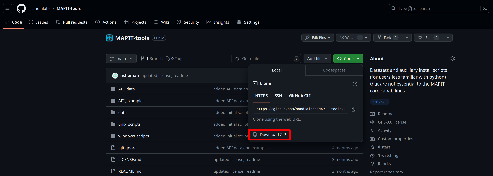
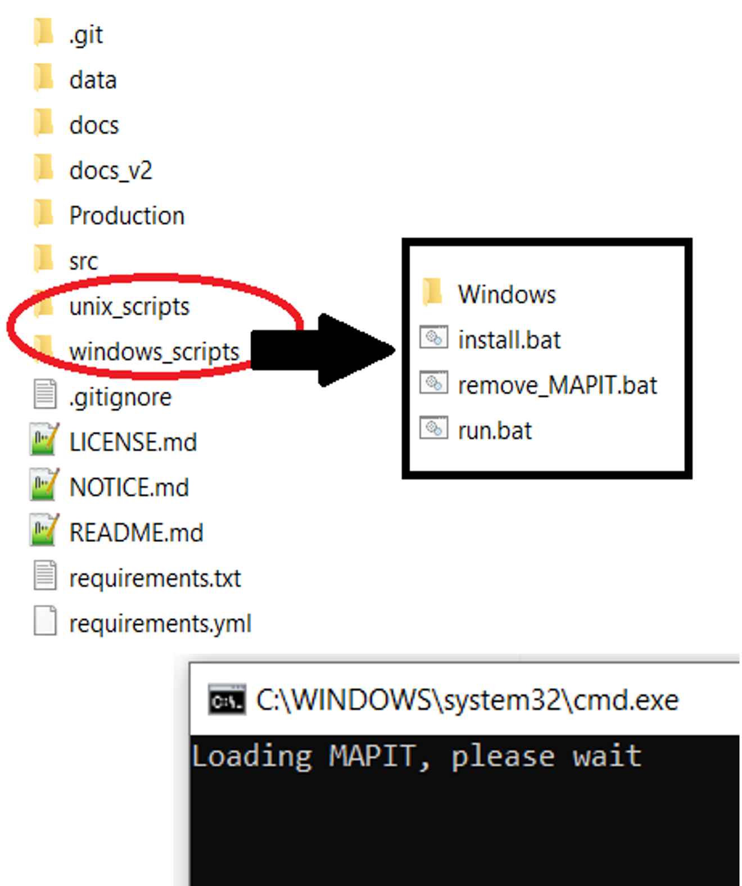

Downloading & Installing MAPIT#
Objective#
This document will show you how to download & install MAPIT onto your PCs! MAPIT is a toolkit written in Python to aid safeguards analysis on bulk facilities. MAPIT is able to be downloaded and installed on all modern operating systems (Windows, Mac, and Linux)
Experienced with Python#
In most cases, you can simply install directly from our repository. We recommend using environments (either venv or conda).
Depending on what conda distribution you have (e.g., anaconda vs miniconda) these instructions might vary. Here’s an example assuming you have an empty conda environment:
conda install pip "python<3.12,>3.8
pip install git+https://github.com/sandialabs/MAPIT
After MAPIT has been installed, you can call the GUI entry point from the command line simply by calling MAPIT from your environment. You can also import the MAPIT API and use it as a library.
Additional scripts and data can be found in the MAPIT-tools repo. The exemplar data is in the folder data and can be specified in MAPIT by going File -> Load exemplar data and pointing to the data folder.
New to Python#
If you’re not very familiar with Python, we provide several setup scripts to help you get started.
Downloading MAPIT tools#
{kind=link}
The MAPIT-tools files can be located at https://www.github.com/sandialabs/MAPIT-tools
In the directory click on the green code button in the top right
In the pull down menu click the download zip button
Once the download is complete, unzip the folder on your computer
Download complete!
Installing MAPIT#
Once you have downloaded and unzipped the MAPIT-tools folder you will have the following folders on your computer
{kind=link}
The key folders for the install process are the windows_scripts and linux_scripts
If you are using a windows operating system click on the windows scripts_folder
if you are using a unix operating system (Mac or Linux) click on the unix scripts_folder
Inside the respective folders you will see three key files: install, run, and remove_MAPIT
Click on the install file and MAPIT will begin the install process
The install file will download miniconda3, a minamalist version of Anaconda, and will only download the python packages required to run MAPIT
After installing miniconda3, the key python modules are installed
This process can take a few minutes, please keep the command prompt or shell open until “MAPIT environment install completed”
Installation complete! You are now able to run MAPIT on your computer!